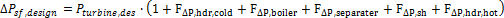
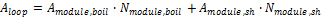
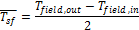
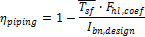
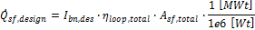
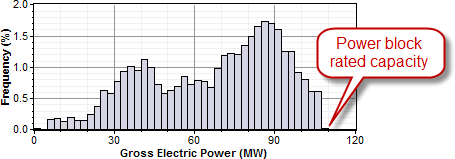
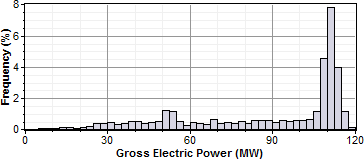
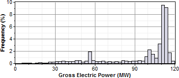
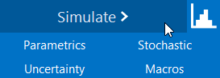

Solar Field#
Solar Field Parameters#
- Option 1 and Option 2
For Option 1 (solar multiple mode), SAM calculates the total required aperture and number of loops based on the value you enter for the solar multiple.
For option 2 (field aperture mode), SAM calculates the solar multiple based on the field aperture value that you enter.
- Solar Multiple
The field aperture area expressed as a multiple of the aperture area required to operate the power cycle at its design capacity.
Note
For a discussion of solar multiple and design-point conditions, see Solar Multiple.
- Design point irradiation, W/m²
The design point direct normal radiation value, used in solar multiple mode to calculate the aperture area required to drive the power cycle at its design capacity. Also used to calculate the design mass flow rate of the heat transfer fluid for header pipe sizing.
Design point ambient temperature,****°C
The reference ambient temperature for the solar field, used as a basis for calculating thermal losses from the receivers and piping. Note that this value is not used as a reference for receiver thermal losses if the evacuated tube receiver option is selected on the Collector and Receiver page.
- Loop flow configuration
The loop flow configuration determines whether the boiler is configured as once-through or recirculated.
In the recirculated boiler design, a portion of the collectors in the loop are dedicated to boiling the subcooled feedwater, but the boiler mass flow rate is controlled such that the boiling mixture exits the boiler section with a vapor fraction (quality) equal to the value that you specify in the Boiler outlet steam quality input on the Solar Field page. The liquid fraction is extracted and recirculated to the inlet of the solar field loop where it mixes with the subcooled liquid from the power cycle outlet. The saturated steam at the outlet of the boiler section does not recirculate, but instead passes into the dedicated superheater section where it continues to increase in temperature before entering the power cycle.
In the once-through design, subcooled feedwater from the power cycle outlet enters the solar field collector loop, is boiled to steam as it passes through the loop, and exits to the hot header as superheated steam.
The most common configuration for existing linear Fresnel plants is the recirculated boiler design, though developments in the technology show the once-through design to be promising. Both options are included in this model for comparative purposes.
- Superheater has unique geometry
SAM allows you to specify different geometries and optical characteristics for the boiler and superheater sections of the field.
To specify a field with different boiler and superheater geometries and optical characteristics, check the box, and specify the characteristics for each section on the Collector and Receiver page.
To specify a field with the same properties for the boiler and superheater sections, clear the check box, and specify characteristics for the boiler section only on the Collector and Receiver page. SAM will apply those properties to the entire field, and ignore the Superheater Geometry inputs on the Collector and Receiver page.
- Number of modules in boiler section
The number of boiler units in series in a single loop, each with geometry as defined on the Collector and Receiver page under Boiler Geometry.
- Number of modules in superheater section
The number of superheater units in series in a single loop, each with geometry as defined on the Collector and Receiver page under Superheater Geometry.
If Superheater has unique geometry is checked, the properties of the boiler section and superheater section will be different, as defined by the boiler and superheater inputs on the Collector and Receiver page. Otherwise, the boiler inputs to both the boiler and superheater sections.
Note
Take special care in selecting the number of boiler and superheater sections. The steam conditions at the outlet of the solar field depend on the ratio between the heat absorbed by the boiler and the superheater. As the heat absorbed in the superheater sections increases relative to the boiler sections, the outlet steam temperature will also increase beyond the design point. Consequently, the number of superheater modules should correspond to the desired thermal input in addition to the saturated steam produced by the boiler.
- Field pump efficiency
The isentropic efficiency of the feedwater and recirculation pump (if applicable) in the solar field. The total work required to propel the feedwater is divided by this efficiency value to give the electrical parasitic pumping requirement.
- Collector azimuth angle (degrees)
The azimuth angle of all collectors in the field, where zero degrees is pointing toward the equator, equivalent to a north-south axis. West is 90 degrees, and east is -90 degrees. SAM assumes that the collectors are oriented 90 degrees east of the azimuth angle in the morning and track the daily movement of the sun from east to west.
The collector azimuth angle variable is not active with the Solar position table option on the Collector and Receiver page. The variable is only active with either the two incidence angle options for specifying the solar field.
- Thermal inertia per unit of solar field
The amount of energy required to increase the working temperature of the solar field, per unit aperture area of the solar field. The thermal inertia term is used to model the startup and shutdown transient behavior of the solar field. During startup, the thermal energy produced by the solar field is reduced according to the energy that goes into heating the working fluid, receiver components, piping, fittings, and insulation. This input captures all of those aspects of transient startup in the solar field.
Steam Conditions at Design#
This set of inputs defines the design-point operating conditions of the steam in the solar field. The field inlet and outlet temperatures, the pressure constraints, and the boiler outlet quality (if applicable) are used to calculate the enthalpy of steam during the simulation at each collector module in the loop.
- Field inlet temperature, °C
The estimated temperature of feedwater from the power cycle at the inlet of the solar field. This value is used to calculate estimated thermal losses from the solar field at design, and is not directly used in calculating the hourly performance for the annual simulation. The field inlet temperature is calculated during performance runs based on the power cycle conversion efficiency and the steam temperature at the inlet of the power cycle.
- Field outlet temperature, °C
The estimated design-point steam outlet temperature from the solar field. The actual field outlet temperature is calculated in the performance runs based on the Loop flow configuration (once-through or recirculated boiler), the boiler outlet quality (for recirculated designs), collector performance, and flow rate constraints. The actual field outlet temperature during performance calculations is highly sensitive to the ratio of superheater to boiler aperture area, and consequently, the Field outlet temperature that you specify may differ substantially from the actual outlet temperature if care is not taken in selecting the correct number of superheater modules in the recirculated boiler design. Refer to the documentation on the number of boiler/superheater modules for more information.
- Boiler outlet steam quality
For the recirculated boiler configuration, the boiler outlet steam quality is used to calculate the mass flow rate of steam in the boiler section. This value represents the fraction of fluid exiting the boiler section that is in vapor phase. The balance of the unevaporated fluid recirculates to the inlet of the solar field and is mixed with the subcooled feedwater from the power cycle outlet.
This value is not used for the once-through Loop flow configuration.
- Turbine inlet pressure
The steam pressure at the inlet of the turbine at design conditions. The actual steam pressure during the performance calculations will vary as a function of the steam mass flow rate into the power cycle. The minimum steam pressure is limited to 50% of the design-point rating. Note that the steam mass flow rate into the power cycle may differ from the steam mass flow rate in the solar field if auxiliary fossil backup is used.
- Cold header pressure drop fraction
The fractional pressure drop across the cold header section of the solar field at design. The absolute pressure drop at design is equal to the fractional drop times the rated turbine inlet pressure.
- Boiler pressure drop fraction
The fractional pressure drop across the boiler section of the solar field at design. The absolute pressure drop at design is equal to the fractional drop times the rated turbine inlet pressure.
- Pressure drop fraction between boiler and superheater
The fractional pressure drop across any piping or steam separation equipment between the boiler and superheater sections at design. The absolute pressure drop at design is equal to the fractional drop times the rated turbine inlet pressure.
- Design point pressure drop across the superheater fraction
The fractional pressure drop across the superheater section of the solar field at design. The absolute pressure drop at design is equal to the fractional drop times the rated turbine inlet pressure.
- Average design point hot header pressure drop fraction
The fractional pressure drop across the hot header section of the solar field at design. The absolute pressure drop at design is equal to the fractional drop times the rated turbine inlet pressure.
- Total solar field pressure drop
The total calculated solar field pressure drop at design. The calculated value is based on a sum of the fractional pressure drops from individual solar field subsystems and is multiplied by the rated turbine pressure at design.

Note that the pressure at the inlet of the solar field is equal to the pressure at the inlet of the turbine plus the total pressure drop across the solar field. You should choose a turbine design-point pressure to maintain operable steam pressures at the solar field inlet.
The steam property algorithms currently used in the SAM performance runs limit the maximum steam pressure to 190 bar, and values exceeding this limit will be reset during the simulation. This limit has been known to cause convergence issues in cases where design-point pressures are too high or where the solar field is designed to frequently operate with mass flow rates significantly higher than the design-point flow rate on which the pressure drop relationship is based.
Design Point#
Single loop aperture, ****m² This calculated value indicates the total reflective aperture area of the collectors in a single loop. The value is calculated by multiplying the number of nodes in the boiler and superheater sections by their corresponding reflective aperture area on the Collector and Receiver page. The total aperture area calculation is as follows:

Loop optical efficiency
The total loop optical efficiency at design, where the solar position is normal to the collector aperture. The efficiency is the weighted product of the boiler and superheater sections, if applicable.
Loop thermal efficiency
The estimated thermal efficiency at design conditions corresponding to the input selections on the Collector and Receiver page. If the Polynomial fit heat loss model is used, the polynomial equation for temperature-based heat loss is evaluated at the average design-point solar field temperature, where that temperature is equal to the average of the outlet and inlet solar field temperatures on the Solar Field page.

If the Evacuated tube heat loss model is used, SAM estimates thermal efficiency based on the user-specified Estimated avg. heat loss and Variant weighting fraction values on the Collector and Receiver page.
Note
The design-point thermal efficiency value is used only to size the solar field aperture area and is not part of the simulation calculations.
Piping thermal efficiency
The estimated non-collector piping thermal efficiency at design. This value is calculated based on the Piping thermal loss coefficient on the Parasitics page. The estimated efficiency is equal to the compliment of the product of the average solar field operating temperature at design and the heat loss coefficient divided by the design-point solar irradiation.

Total loop conversion efficiency
The total estimated loop conversion efficiency at design, including collector optical performance, receiver thermal losses, and piping thermal losses. This value is used to size the solar field aperture area given a solar multiple and required power cycle thermal input.
Total required aperture, SM=1
The calculated aperture area that provides a thermal output from the solar field that exactly matches the power cycle design-point thermal input (i.e. a solar multiple of 1). This value is used to calculate the corresponding number of loops at a solar multiple of 1.
Required number of loops, SM=1
The number of loops that fulfills the thermal output requirement of the solar field at a solar multiple of 1.
Actual number of loops
The number of loops in the solar field that produces a thermal output at design equal to the power cycle thermal input rating times the solar multiple.
Actual aperture
The actual aperture area is a calculated value equal to the product of the actual number of loops and the reflective aperture area of a single loop, as calculated above.
Actual solar multiple
The actual solar multiple is calculated using the thermal power produced at design with an aperture area equal to the Actual aperture calculated value, the design-point ambient and irradiation conditions, and the thermal power requirement of the power cycle.
The actual solar multiple may differ from the user-specified input value if the sum of the thermal output provided by the integer number of loops matches the product of the solar multiple (user input) and the power cycle thermal requirement.
Field thermal output
Thermal energy output from the solar field at design conditions. This value is calculated based on the actual aperture area of the field and the estimated loop conversion efficiency at design.

Land Area#
The land area inputs determine the total land area in acres that you can use to estimate land-related costs in $/acres on the Installation Costs and Operating Costs pages.
- Solar field area, acres
The actual aperture area converted from square meters to acres:
Solar Field Area (acres) = Actual Aperture (m²) × Row Spacing (m) / Maximum SCA Width (m) × 0.0002471 (acres/m²)
The maximum SCA width is the aperture width of SCA with the widest aperture in the field, as specified in the loop configuration and on the Collectors (SCA) page.
- Non-solar field land area multiplier
Land area required for the system excluding the solar field land area, expressed as a fraction of the solar field aperture area. A value of one would result in a total land area equal to the total aperture area.
- Total land area, acres
Land area required for the entire system including the solar field land area
Total Land Area (acres) = Solar Field Area (acres) × (1 + Non-Solar Field Land Area Multiplier)
The land area appears on the Installation Costs page, where you can specify land costs in dollars per acre.
Mirror Washing#
SAM reports the water usage of the system in the results based on the mirror washing variables. The annual water usage is the product of the water usage per wash and 365 (days per year) divided by the washing frequency.
- Water usage per wash
The volume of water in liters per square meter of solar field aperture area required for periodic mirror washing.
- Washes per year
The number of washes per year.
Field Control#
- Min single loop flow rate, kg/s
The minimum allowable steam flow rate in a single loop of the solar field. During night-time or low-insolation operation, the field will recirculate at a mass flow rate equal to this value. The minimum solar field mass flow rate is equal to the Min single loop flow rate times the actual number of loops in the field.
- Freeze protection temperature, °C
The temperature below which auxiliary fossil backup heat is supplied to the solar field to prevent water from freezing in the equipment. You should set this value such that a reasonable margin exists between activation of the electric heat trace freeze protection equipment and the actual freezing point of water.
- Stow wind speed, m/s
The maximum allowable wind velocity before the collectors defocus and enter safety stow position. The solar field cannot produce thermal energy during time steps in which the ambient wind velocity exceeds this limit.
- Solar elevation for collector nighttime stow, deg
The solar elevation angle (above the horizon) that sets the operational limit of the collector field in the evening hours. When the solar elevation angle falls below this value, the collector field will cease operation.
- Solar elevation for collector morning deploy, deg
The solar elevation angel (above the horizon) that sets the operational limit of the collector field in the morning hours. When the solar elevation angle rises above this value, the collector field will begin operation.
Solar Multiple#
Sizing the solar field of a parabolic trough or linear Fresnel system in SAM involves determining the optimal solar field aperture area for a system at a given location. In general, increasing the solar field area increases the system’s electric or thermal output, thereby reducing the project’s levelized cost of energy. However, during times when there is enough solar resource, too large of a field will produce more thermal energy than the power cycle or heat sink and other system components can handle. Also, as the solar field size increases beyond a certain point, the higher installation and operating costs outweigh the benefit of the higher output.
An optimal solar field area should:
Maximize the amount of time in a year that the field generates sufficient thermal energy to drive the power cycle or heat sink at its rated capacity.
Minimize installation and operating costs.
Use thermal energy storage and backup power equipment efficiently and cost effectively.
The problem of choosing an optimal solar field area involves analyzing the tradeoff between a larger solar field that maximizes the system’s electrical output and project revenue, and a smaller field that minimizes installation and operating costs.
The levelized cost of energy (LCOE or LCOH) is a useful metric for optimizing the solar field size because it includes the amount of electricity or heat generated by the system, the project installation costs, and the cost of operating and maintaining the system over its life. Optimizing the solar field involves finding the solar field aperture area that results in the lowest LCOE or LCOH. For systems with thermal energy storage systems, the optimization involves finding the combination of field area and storage capacity that results in the lowest LCOE or LCOH.
Option 1 and Option 2#
SAM’s parabolic trough and linear Fresnel models provide two options for specifying the solar field aperture area on the System Design page:
Option 1: You specify the solar field area as a multiple of the power cycle (design turbine gross output) or heat sink rated capacity (heat sink thermal power), and SAM calculates the solar field aperture area in square meters required to achieve the rated capacity.
Option 2: You specify the aperture area in square meters independently of the power cycle or heat sink rated capacity.
If your analysis involves a known solar field area, you should use Option 2 to specify the solar field aperture area.
If your analysis involves optimizing the solar field area for a specific location, or choosing an optimal combination of solar field aperture area and thermal energy storage capacity, then you should choose Option 1, and follow the procedure described below to size the field.
Solar Multiple#
Note
The description in this section refers to the power cycle of a system that generates electricity. For industrial process heat (IPH) systems, the same principles apply, but are determined by the heat sink capacity rather than the power cycle capacity.
The solar multiple makes it possible to represent the solar field aperture area as a multiple of the power cycle rated capacity. A solar multiple of one (SM=1) represents the solar field aperture area that, when exposed to solar radiation equal to the design point DNI (or irradiation at design), generates the quantity of thermal energy required to drive the power cycle at its rated capacity (design gross output), accounting for thermal and optical losses.
Because at any given location the number of hours in a year that the actual solar resource is equal to the design point DNI is likely to be small, a solar field with SM=1 will rarely drive the power cycle at its rated capacity. Increasing the solar multiple (SM>1) results in a solar field that operates at its design point for more hours of the year and generates more electricity.
For example, consider a system with a power cycle design gross output rating of 111 MW and a solar multiple of one (SM=1) and no thermal storage. The following frequency distribution graph shows that the power cycle never generates electricity at its rated capacity, and generates less than 80% of its rated capacity for most of the time that it generates electricity:

For the same system with a solar multiple chosen to minimize LCOE (in this example SM=1.5), the power cycle generates electricity at or slightly above its rated capacity almost 15% of the time:

Adding thermal storage to the system changes the optimal solar multiple, and increases the amount of time that the power cycle operates at its rated capacity. In this example, the optimal storage capacity (full load hours of TES) is 3 hours with SM=1.75, and the power cycle operates at or over its rated capacity over 20% of the time:

Note
For clarity, the frequency distribution graphs above exclude nighttime hours when the gross power output is zero.
Reference Weather Conditions for Field Sizing#
The design weather conditions values are reference values that represent the solar resource at a given location for solar field sizing purposes. The field sizing equations require three reference condition variables:
Ambient temperature
Direct normal irradiance (DNI)
Wind velocity
The values are necessary to establish the relationship between the field aperture area and power cycle rated capacity for solar multiple (SM) calculations.
Note
The design values are different from the data in the weather file. SAM uses the design values to size the solar field before running a simulation. During the simulation, SAM uses data from the weather file you choose on the Location and Resource page.
The reference ambient temperature and reference wind velocity variables are used to calculate the design heat losses, and do not have a significant effect on the solar field sizing calculations. Reasonable values for those two variables are the average annual measured ambient temperature and wind velocity at the project location. For the physical trough model, the reference temperature and wind speed values are hard-coded and cannot be changed. The linear Fresnel and generic solar system models allow you to specify the reference ambient temperature value, but not the wind speed. The empirical trough model allows you to specify both the reference ambient temperature and wind speed values.
The reference direct normal irradiance (DNI) value, on the other hand, does have a significant impact on the solar field size calculations. For example, a system with reference conditions of 25°C, 950 W/m:sup:2, and 5 m/s (ambient temperature, DNI, and wind speed, respectively), a solar multiple of 2, and a 100 MWe power cycle, requires a solar field area of 871,940 m2. The same system with reference DNI of 800 W/m2 requires a solar field area of 1,055,350 m2.
In general, the reference DNI value should be close to the maximum actual DNI on the field expected for the location. For systems with horizontal collectors and a field azimuth angle of zero in the Mohave Desert of the United States, we suggest a design irradiance value of 950 W/m2. For southern Spain, a value of 800 W/m2 is reasonable for similar systems. However, for best results, you should choose a value for your specific location using one of the methods described below.
Linear collectors (parabolic trough and linear Fresnel) typically track the sun by rotating on a single axis, which means that the direct solar radiation rarely (if ever) strikes the collector aperture at a normal angle. Consequently, the DNI incident on the solar field in any given hour will always be less than the DNI value in the resource data for that hour. The cosine-adjusted DNI value that SAM reports in simulation results is a measure of the incident DNI.
Using too low of a reference DNI value results in excessive “dumped” energy: Over the period of one year, the actual DNI from the weather data is frequently greater than the reference value. Therefore, the solar field sized for the low reference DNI value often produces more energy than required by the power cycle, and excess thermal energy is either dumped or put into storage. On the other hand, using too high of a reference DNI value results in an undersized solar field that produces sufficient thermal energy to drive the power cycle at its design point only during the few hours when the actual DNI is at or greater than the reference value.
To choose a reference DNI value:
Choose a weather file on the Location and Resource page.
For systems with storage, specify the storage capacity and maximum storage charge rate defined on the System Design page.
Click Simulate.

On the Results page, click Statistics.
Read the maximum annual value of Field collector DNI-cosine product (W/m2), and use this value for the reference DNI.
An alternative method is to choose a reference DNI value on the System Design page to minimize collector defocusing, to do this, try different values for Design point DNI on the System Design page until you find a value that minimizes the total Field fraction of focused SCAs output variable on the Statistics tab. You could also use parametric simulations to find the reference DNI value.